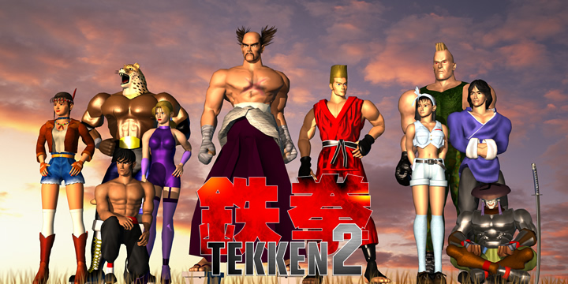

Date: 1995-08-03
Title: Tekken 2
Summary: The sequel that expanded the roster, improved gameplay, and deepened the Tekken story.
Categories: Arcade, Classic
Type: Game Files
File Size: ~600 MB
Format: ISO / ROM
Region: Japan / USA / Europe
Platform: Arcade / PS1
Tekken 2 builds on the success of the first game by adding more characters, smoother animations, and improved mechanics such as throws and reversals. It also expanded the story of the King of Iron Fist Tournament, introducing deeper character backgrounds and multiple endings, making it a fan favorite among classic fighting games.
Note: Support Original Game By buying Official CD of Tekken 2. --Tekken 2 Can be Played By either a real Ps1 or By Ps1 Emulatores via Pc. Download